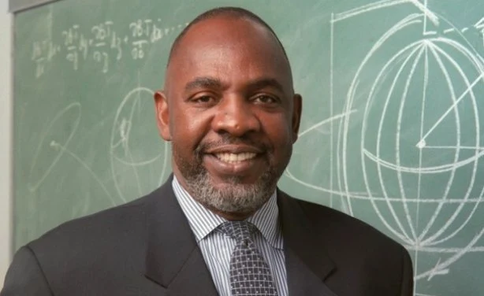

Cheick Modibo Diarra

Cheick Modibo Diarra é um astrofísico e político malinês, reconhecido por sua atuação na NASA e por ter servido como Primeiro-Ministro do Mali. Sua carreira abrange desde contribuições científicas significativas até liderança em iniciativas educacionais e tecnológicas na África.
Principais Contribuições
- Atuou como navegador interplanetário na NASA, contribuindo para missões de exploração espacial.
- Serviu como Presidente da Microsoft África, promovendo a inclusão digital no continente.
- Fundou a Pathfinder Foundation for Education and Development, incentivando a educação científica entre jovens africanos.
- Exerceu o cargo de Primeiro-Ministro do Mali em 2012, liderando o país durante um período de transição política.
Legado e Impacto
- Reconhecido como Embaixador da Boa Vontade pela UNESCO por suas contribuições à ciência e tecnologia.
- Inspirou uma geração de jovens africanos a perseguirem carreiras nas áreas de ciência e tecnologia.
- Seu trabalho na Microsoft África impulsionou a adoção de tecnologias digitais em diversos países africanos.
- Seu trabalho na Microsoft África impulsionou a adoção de tecnologias digitais em diversos países africanos.
Saiba mais
Voltar